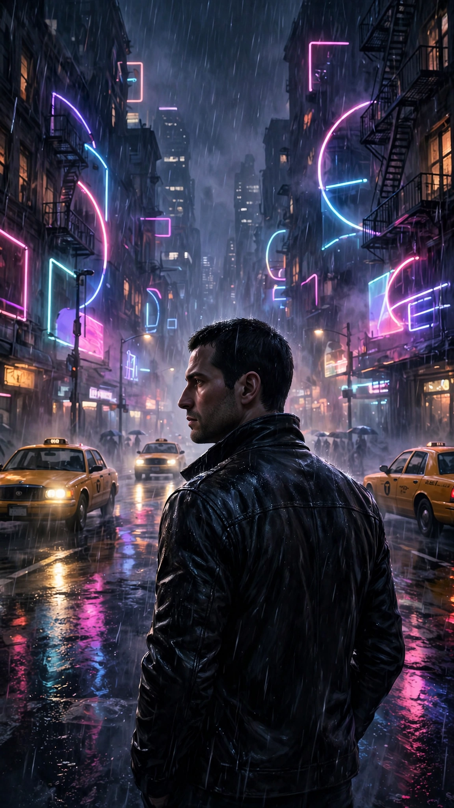
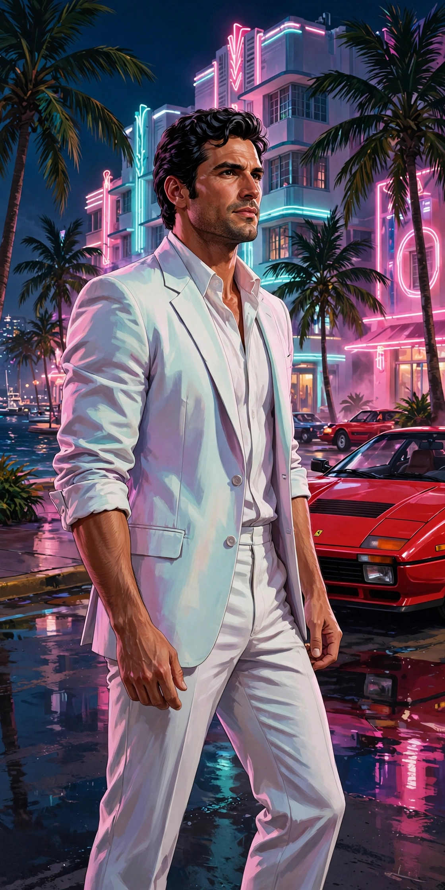
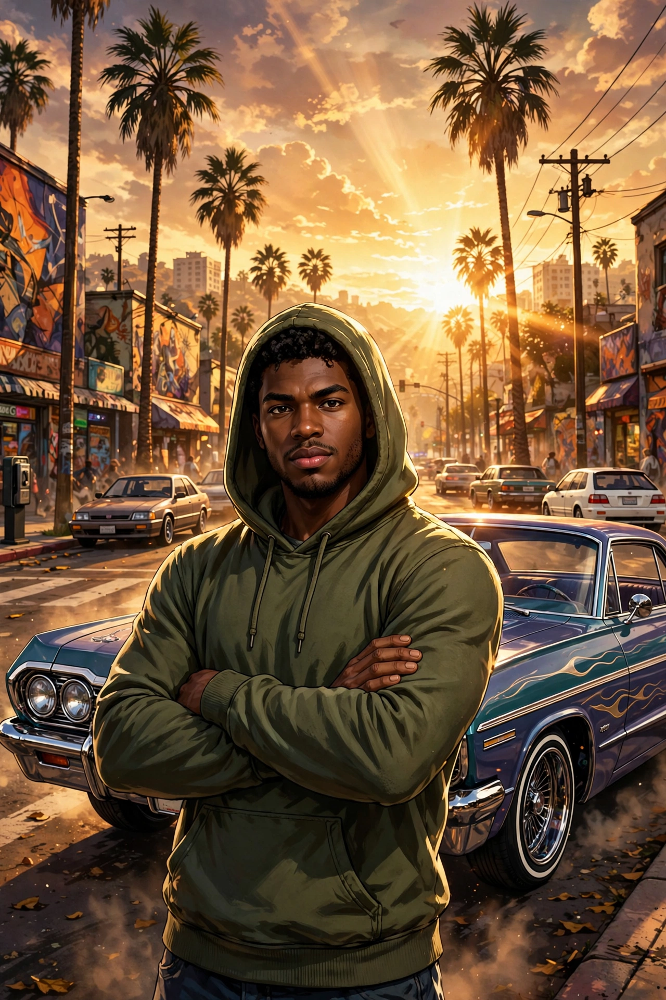
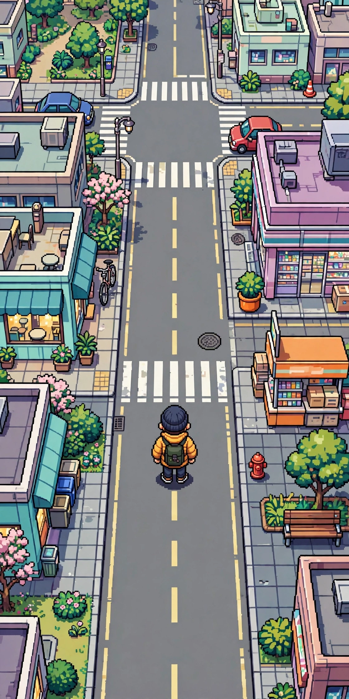
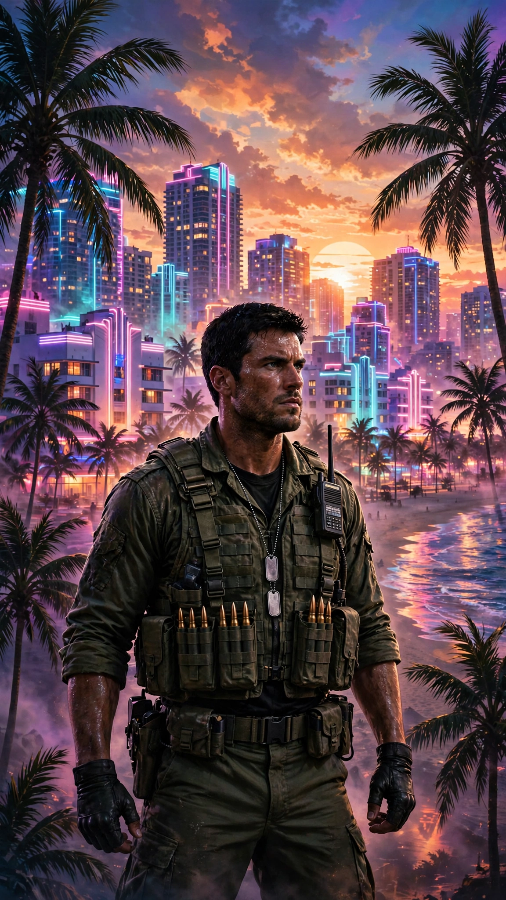
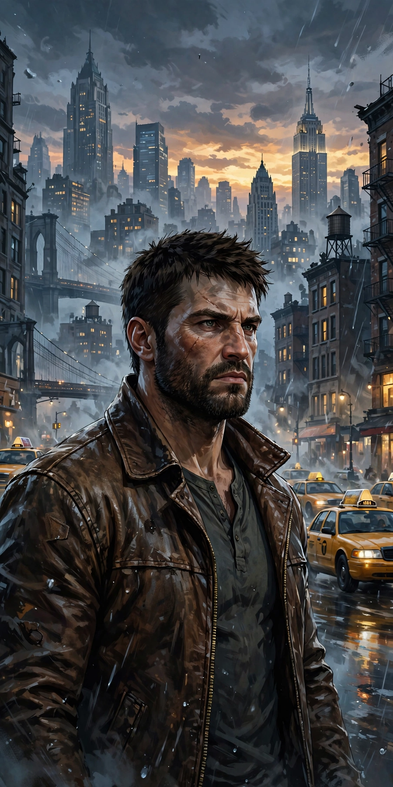
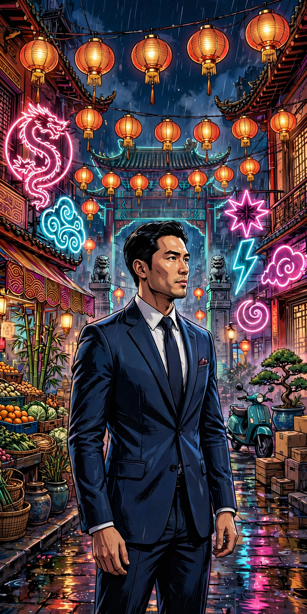
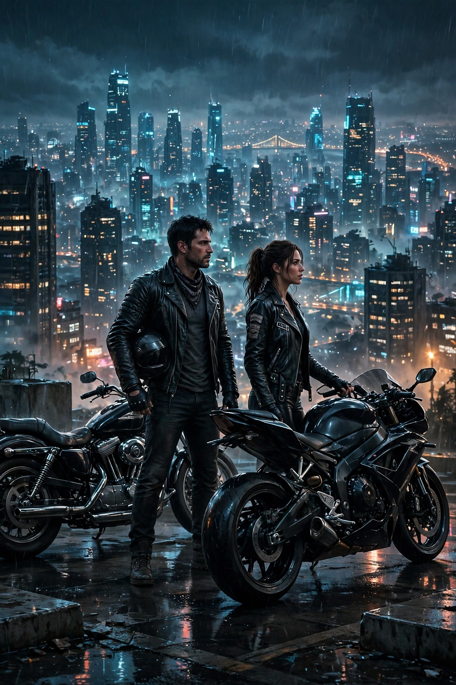
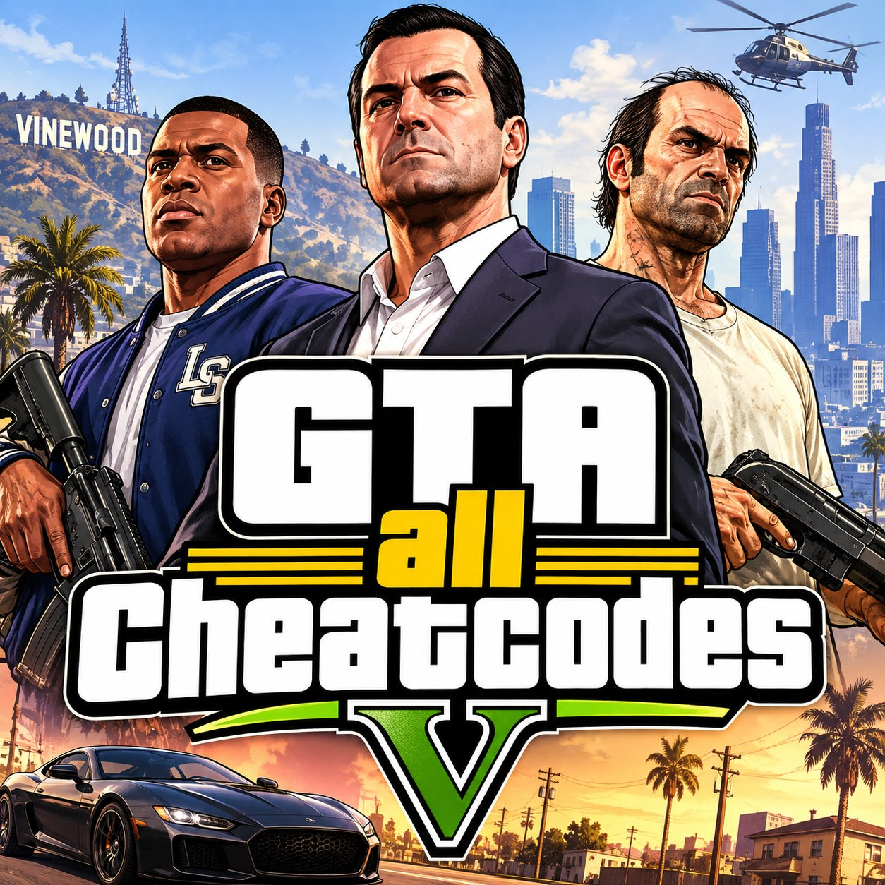
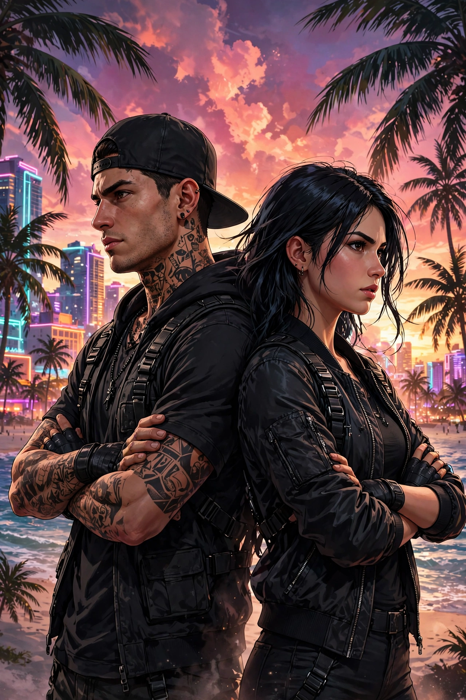

CHEATVERSE
Every GTA cheat code — verified, searchable, one tap to copy. From GTA III (2001) to GTA VI (2026).
Tip: open a game below for its full list, or type here to search all 302 codes.

GTA III (III)
Liberty City. The one that started the 3D era.
23 codes · 2001
GTA Vice City (VC)
Neon lights, Ocean Drive, Tommy Vercetti.
40 codes · 2002
GTA San Andreas (SA)
Grove Street. San Andreas. CJ is home.
48 codes · 2004
GTA Advance (ADV)
Liberty City on Game Boy Advance.
9 codes · 2004GTA Liberty City Stories (LCS)
Toni Cipriani returns to Liberty City.
44 codes · 2005
GTA Vice City Stories (VCS)
Vic Vance. Vice City, two years earlier.
36 codes · 2006
GTA IV (IV)
Niko Bellic. The American Dream, Liberty City.
16 codes · 2008
GTA Chinatown Wars (CW)
Huang Lee. Top-down chaos in Liberty City.
16 codes · 2009
GTA Episodes from Liberty City (EFLC)
The Lost and Damned + The Ballad of Gay Tony.
15 codes · 2009
GTA V (V)
Michael, Franklin, Trevor. Los Santos.
36 codes · 2013
GTA VI (VI)
Leonida. Lucia and Jason. Out now on PS5 and Xbox.
19 codes · 2026